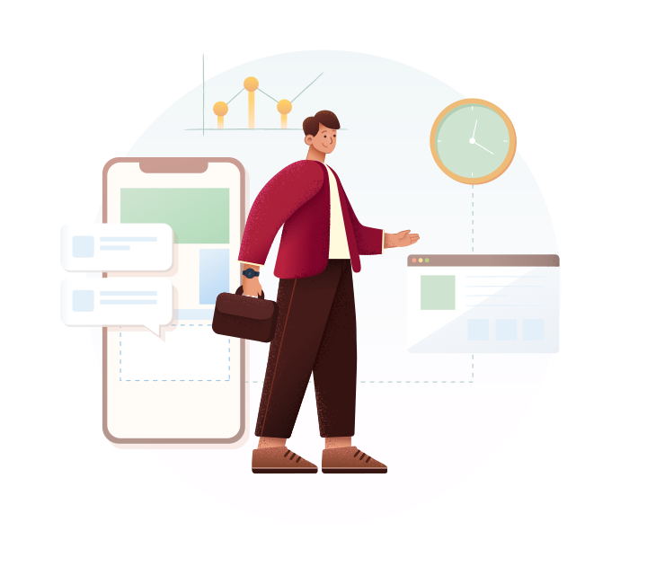

Internet of Things (IoT) adalah paradigma di mana objek fisik dilengkapi dengan sensor, perangkat lunak, dan teknologi komunikasi untuk berkomunikasi dan berinteraksi dengan lingkungan atau pengguna melalui jaringan internet. IoT memungkinkan pengumpulan data secara real-time, pemantauan jarak jauh, dan otomatisasi proses. Contohnya termasuk perangkat rumah pintar, kendaraan otonom, sistem kesehatan yang terhubung, dan infrastruktur kota cerdas. Manfaatnya meliputi efisiensi energi, pemantauan kesehatan yang lebih baik, keamanan yang ditingkatkan, dan pengalaman pengguna yang lebih baik. Namun, tantangan seperti keamanan data, interoperabilitas, dan privasi juga perlu diatasi untuk memaksimalkan potensi IoT.
Sensor mengontrol perangkat secara otomatis, mengurangi konsumsi energi berlebih, dan membantu meminimalkan dampak lingkungan dengan mengurangi emisi karbon.
Sensor yang terpasang pada tempat sampah dan kendaraan pengumpul sampah memberikan informasi real-time tentang tingkat pengisian, memungkinkan perencanaan rute pengumpulan yang lebih efisien dan optimal, serta memastikan limbah dibuang dan diolah dengan tepat.
Sensor yang terhubung memantau penggunaan air dan tanah, memberikan data yang dibutuhkan untuk mengidentifikasi potensi kebocoran, penggunaan yang berlebihan, atau pencemaran, sehingga tindakan preventif dapat diambil untuk menjaga sumber daya alam.
Definisi | Konsep Jenis Sensor | Aplikasi yg Dipakai: 90.8 Pyhton | C/C++ Arduino| Raspberry Pi Bagi kalian yang tertarik Mempelajari MAteri ataupun Pembahasan IoT, ada baiknya kalain tahu bahasa apa saja/ Aplikasi apa saja yang digunakkan untuk mempelajari IoT.Manfaat
Bagi Lingkungan Sekitar
Efisiensi Energi
Pengelolaan Limbah
Konservasi Sumber Daya
Learning Path
Skills & Education
Pemahaman Konsep Dasar IoT:
Langkah - 1
Studi tentang Sensor dan Perangkat IoT
Langkah - 2
Pemrograman Dasar
Langkah - 3
Platform IoT
Langkah - 4
Halo Semuanya!
Apa Sih Yang dimaksud I O T?
IoT, atau Internet of Things, adalah konsep di mana objek fisik seperti perangkat elektronik, kendaraan, atau benda lainnya dilengkapi dengan teknologi yang memungkinkannya terhubung dan berkomunikasi melalui internet, memungkinkan pengumpulan dan pertukaran data secara otomatis.
